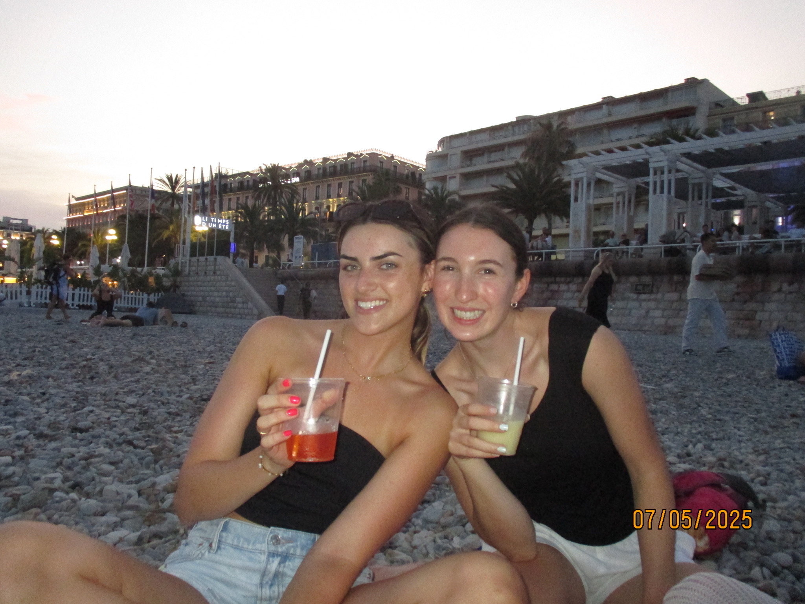
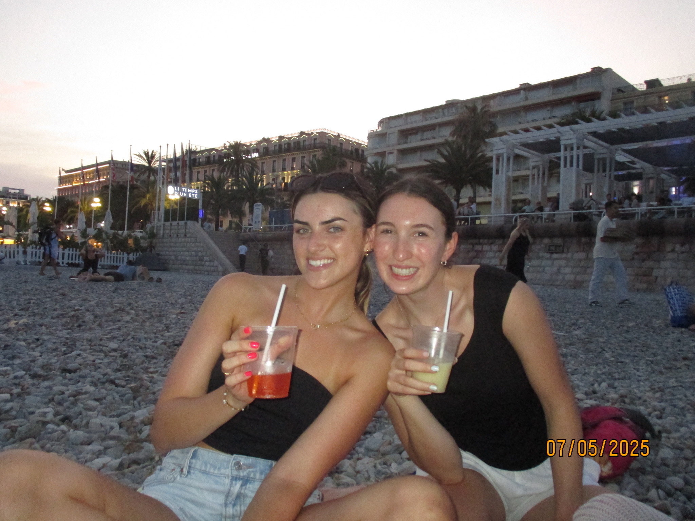

Our 14-Day Itinerary

Day 1: Barcelona, Spain - Arrival
July 2nd, 2025
We took off from BWI airport around 1:00pm. Unfortunately our train was delayed but no worries for us, we alotted time for any delays. We arrived in NYC Penn Station around 4:00 pm and then Grace led us on the LIRR to Jamaica, and from there we caught the Air Tram to JFK! We boarded our scandinavian airplane around 6:30. Then we sat on the tarmac for about an hour because of thunderstorm delays. We finally took off around 8:30 pm EST. Olivia and Grace somehow got economy plus seats and were treated luxuriously while the rest were in economy. However, we all enjoyed yummy dinner, free wine, and breakfast. Then we landed in Copenhagen at 10:00am. We went through customs (aquiring stamps), and then Cara led us to the Metro and navigated us to Norreport, the city center. We enjoyed delicious hot dogs, saw the canal, and walked through a royal garden. Then we took the metro back to the airport and caught our flight to Barcelona. Again we sat on the tarmac for about an hour and a half due to delays, but it gave us all more naptime. We arrived in Barcelona around 8:00pm charged our phones up and then Claire led us through the bus and metro to get to our cute little Airbnb. UNFORTUNATELY, Barcelona did not bless us with a new stamp #sad. Then we freshened up and enjoyed tapas for dinner around 11:00pm! Then we all came home showered and rested for the night preparing for our first full day in Barcelona! Some of us enjoyed the most recent episode of Love Island, thanks to a generous individual's acquisition of a VPN. So far so good :)


Day 2: Barcelona, Spain - Sagrada Familia and Park Güell
July 3rd, 2025
Today we woke up around 10:00am Barcelona time. We spent the morning getting ready and then walked out of the airbnb to a coffee shop called Origo to get pasteries and coffee. We enjoyed our breakfast on a public bench #yaypublicspaces. Then we headed to Sagrada Familia (shoutout the Kintzleys for tickets). We embarked on our own guided audio tours, which were amazing, and then explored the museum on site. Fun fact: Sagrada Familia's first brick was laid in 1882 and it is still being worked on till this day. AMAZING. After Sagrada Familia we went to lunch and had paella and wine with sprite...soooo yummy! Then we walked home and "napped" and or hung out till the next tour. Around 5:30pm we left for Parque Güell via bus transportation. We toured around the park, listened to audio tours, and danced the cotton eyed joe to live music. After Parque Güell we headed to dinner at Cerveceria Catalana, the restuarnt recommened by the Kintzley's. We waited over an hour (got gelato while we waited) and finally got a seat inside for five. We got tapas, sangria, and dessert and it was well worth the wait. Then we headed home and stopped my a local bar (Bloody Mary) and got some more drinks. Now we are home chatting and prepping for our beach day tomorrow! Barcelona so far so good!!! Yay!


Day 3: Barcelona, Spain - Exploring the Waterfront
July 4th, 2025
After a full day of sightseeing yesterday, we took today much slower. We got moving around 12pm (oops) and headed to a local cafe for a latte and pastry. We passed a cute little plaza right around the corner from our Airbnb and plan to head back there for a light dinner and drinks this evening. After our late breakfast we swim suited up and took the tram over to Platja de la Nova Mar Bella. We were pleased to see that the beach was not overly crowded, mostly filled with locals. The water was a perfect temperature and pretty clear so we took our goggles for a spin. After hanging on the beach for awhile, we walked over to a nearby restaurant called Kibo. Three of us had a yummy burger, which felt appropriate for the 4th of July. Then we headed back to our apartment via the tram and got freshened up. For dinner, we walked a few blocks over to La Pepita for a few tapas and some sangria and it was incredible. Dessert was also a must. After dinner we stopped back by Bloody Mary on our walk back. The bartender was kind enough to take a picture of us with our Natty B's for Mr. Tom ;). After one drink we called it a night and headed to bed.


Day 4: Barcelona, Spain → Nice, France - Travel Day
July 5th, 2025
This morning we woke up early in the hopes to visit and experience a market in Barcelona. The market ended up kind of just being a supermarket, however it was cool to see all the yummy fresh produce. After wandering the market we headed to a public square up the road from our Airbnb and got breakfast. We all got orange juice (fresh squeezed soooo yummy) and an American breakfast (two eggs, toast and bacon). We also got to really practice our spanish which was fun! Then we headed home and relaxed for about an hour before our flight. We took the metro to the airport, sailing through baggage check and security (truly a lovely experience). Our flight was delayed an hour (due to air traffic controller strikes in France) so we had a lot of time to kill in the airport. We shopped around, got food, relaxed, read, and journaled as we waited. While we were waiting we also met some girls going to Nice who were really nice (we all had eachothers backs as our gate number and boarding times changed). Once we boarded we sat on the tarmac for an hour, which sucked but was also kind of good because we all napped. We also had the luxury of all sitting togther. Then we landed in Nice went through customs (again no stamp #supersad), and made our way to our airbnb. We overcame the French and got cheap metro tickets by purchasing our tickets at the first stop outside the airport (saved like 6 euros #woohoo). Then we basically had to go on a scavenger hunt to pick up our house key from a locker, but it was fun. Finally we arrived at our gorgeous Airbnb (shoutout Caroline), settled down and got ready for dinner on the beach. We threw on swimsuits, picked up three fresh pizzas, and got 6 euro cocktails. We ate a late dinner on the rocky beach, declared the Buratta pizza the best, swam, and enjoyed Rose gifted by our Airbnb host! Then we came home, showered and got ready for a night out on the town. We went out downtown to a bar called Wayne's because they have live music, but unfortunately the live music ended when we got there. We waited in line for a little to get in but then the bouncer pointed our group out and some other girls out and allowd us to skip the line (becuase we so beautiful). Once in Wayne's we got drinks, danced a little, and made friends. We made friends with a bachelorette party from Whales who said we all had beautiful teeth. Then we made friends with some girls from California, who gave us Florence recommendations. After Wayne's we went to this club called Opera. They ID'd us at the front and giggled at our MD licenses. When we entered they tried to charge us a cover and a drink minimum and we said no thank you and tried to leave. In response they said "wait do not leave" and then they let us in for free. The club was downstairs and soooo cool! Music and dancing was fun! Somehow Cara led us ino the VIP zone of the club and we met these guys from London who lived in California and were super rich (they bought a table and bottle service and gave us free drinks (we were safe and smart about accepting any drinks #promise)). While we were in the VIP section we met girls from Switzerland, Nice, and Columbia, they were all so nice and fun!! Then our friends from California showed up in the bar and we got them in the VIP section too and had so much fun dancing. Then we got lollipops and headed up for the night. Watching tv, relaxing before bed, and preparing to sleep in!!


 



Day 5: Nice, France - Beach Day
July 6th, 2025
This morning we had a late start to our day, getting out of the Airbnb around 12:00pm (oops). We went to almost the downtown mainstreet and got crepes! Mixed berry sweet crepes, ham, egg, and cheese savory crepe, salmon, eggg, and cheese savory crepe, and a four cheese crepe. All were delicious. Then we walked around some souvenir shops, making our way to the beach. We went to one of the local beaches, of course all rock! We read, swam, tanned, took photos, and searched for sea glass, establishing quite a collection. After some hours at the beach we made purchases from the previous souvenir shops and got gelato. Then we went home and showered up for a nice dinner on the main strip. We had an amazing goat cheese and pear flat bread appetizer and then steaks and chicken as entrees, of course accompanied by some local wine and followed by delicious tirimasu and creme brulee (made personally by our waiter for us (Timothy, great kid!)). After we came home and watched Loved Island hoping to go to bed early and rest up for our big day of snorkeling tomorrow.


Day 6: Nice, France - Boat Day
July 7th, 2025
This morning we woke up bright an early in order to catch our snorkel excursion out of Port Lympia. We got pasteries, coffees, and baguettes to go from the local bakery downstairs and directly next door to our Airbnb. Then we headed toward the metro and enjoyed a smooth ride to Port Lympia. Port Lympia was absolutely gorgeous with these mega yachts (both power and sailing), as well as a cruise ship. We walked around the port and checked in early for our snorkel excursion. While waiting we met a family from Richmond Virginia and a couple from Charolettesville Virginia. The couple was soooo sweet, the husband flies for United and the Mother was a teacher (very similar to our friends the Kintzley's). Eventually we got fitted for our flippers and goggles and finally disembarked from the port. It was a 25 minute boat ride around the coast to the snorkeling area. The area in which we snorkeled was off of the town called Villefranche-sur-Mer in a protected body of water called Rade de Villefranche. The area was popular for scuba diving as 10 meters down they have a "coral cave". We snorkeled for about an hour seeing many pretty fish, sea urchins, and 3 star fish! The water was soooo salty to after and hour we were ready to head out. Once back at port we walked to what were persumed to be a memorial (it was all in French and the translation was just a bunch of quotes), another #ilovenice sign and just a beautiful look out of the water. Then we walked back around the port to get lunch. We all enjoyed a delicious seafood pasta dish that included clams, prawns, mussels, octopus, and squid! Then we walked off our lunch seeing more yachts, the yacht club of Nice, and beaches along the water. Before heading back home via metro we filled our water bottles at a public water bottle filling station that offered both still and sparkling refill options (so cool #freewater #yay) (and teh water was cold). Once home we watched some tv, napped, and enjoyed some more pasteries from downstairs. Then we got ready for dinner and took some cute pictures. We headed out on the town, buying some last minute souvenirs and returning to the local bar with 6 euro drinks for happy hour. We ended up making friends with Canadians there as well as the owner and bar tender. Since we are so amazing we got free shots and a free round from the owner. Then we picked up some pizzas and enjoyed them at home while watching some tv. We made it an early night in order to prepare for our big travel day the next morning.


Day 7: Nice, France → Genoa, Italy - Travel Day
July 8th, 2025
Today was a long and interesting travel day from Nice to Genova. We were out the house around 9:45 in order to grab pasteries and to walk to the train station. Our train from France left at 10:20 am. The station was quite easy to navigate and we caught our train just in time. On the platform while waiting we met a family from North Carolina and Alabama, who had the same travel plans as us and were heading to Genova. The train was overbooked so we stood for a bit of the ride but as people got off we all got to sit togther. The ride was absolutely gorgeous as it was along the coast, and our view was the ocean! We also rode through Monaco which was so pretty and cool to see. Around 10:15 am we arrived at and got off at Ventimiglia in Italy to catch our connection to Genova at 11:57 am. Unfortunately the Itailian trains were on strike until 6pm. However, we were unsure if that included our train so we waited at the station (especially because our train was still present on the board and was only indicated as being delayed) until around 1:00pm. While waiting we made friends with a girl who was from Germany and closer friends with the family from North Carolina. Around 1:00 pm we made the official call to give up and book a new train for 7:00pm. This was a difficult decision because we ended up missing our cooking class in Genova, but all was well because we got to explore Ventimiglia (can not really complain that we were stranded in a small Italian costal town). So we decided to get some lunch at the cutest little restuarant, it was run by this little old man and his wife and the food was scrumptious. Then we dragged our suitcases to a local park where we set up shop for about an hour. We spent our time reading and napping. Then we walked around the park taking in all that it had to offer. After we ventured toward the train station getting cocktails, some pizza, and of course gelato (seeing our North Carolina and Alabama friends again). We finally disembarked from Ventimiglia around 7:20. The train was quite nice and the views were gorgeous. We arrived in Genova around 9:30. We walked to our Airbnb and up like 6 flights of stairs to the top floor to get into the apartment (which ended up being a struggle as the door knob was strange and Grace could not pass the security tests that gave her access to her Airbnb account (why do they make them so hard)). Finally Olivia magically opened the door!!!! Then we all showered, watched Love Island, and headed to bed.


Day 8: Genoa, Italy - Walking Tour by Grace
July 9th, 2025
After a long day of travel, we woke up early to get the most out of Genova. We left our Airbnb shortly after 9:00am stopping at Caffetteria San Luca for yummy espresso and croissants. Then we popped in a local church down the street and hit up some souvenir shops! After, we made our way to Cathedral of San Lorenzo, which was absolutely gorgeous, inside and out. Then we did some more souvenir shopping (stay tuned friends and family (hopefully US customs are cooperative)). Then we made our way toward Piazza De Ferrari (a beautiful plaza with a large fountain), stumbling upon Doge's Palace, Statua si Garibaldi, and Academia Ligustica di Belle Art di Genova (a ballet theater). Then as we walked we stumbled upon a store Bershka and did some shopping for clothes we totally can not fit in our carry ons (but we made it work). After we got lunch at a mediterranean restaurant, Olivia and Grace enjoyed Limoncello Spritz's and focaccia sandwhiches, while Cara, Caroline, and Claire got rice bowls with salmon and Summer Spritz's. From lunch we went to Casa di Colombo (Christopher Columbus's house), but we did not enter becuase we did not want to pay and it was small. Next to his house is Porta Soprana, which are these tall buildings that served as gates of the ancient walls of Genova. From there we walked toward the port to check it out, grabbed a midday coffee, and then hiked up to Spinata di Castelletto which was a gorgeous look out of the city (it was not a simple walk though, sooooo many stairs). Then we ventured home to relax for about an hour and get ready for dinner. We left for dinner around 7:00pm headed to the port to go up the Bigo 360 panoramic lookout of the port and city of Genova, twas quite cool. Then we picked up some last minute souvenirs and headed to L'Ostaia in Darsena for dinner. Fun fact: our Airbnb host recommended the restuarant to us and made the reservation for us. We did a three course meal, in which we got to taste the flavors of Genova. The pesto main course was delicious! After dinner we walked ourselves home, showered, packed, and watched some tv before heading to bed, prepping for another big travel day.


Day 9: Genoa, Italy → La Spezia, Italy - Hiking Day
July 10th, 2025
Today we woke up around 8:00am and made our way to the train station in Genova. We got onto a train at 8:53am headed to La Spezia, fortunately we all got to sit together. We arrived in La Spezia around 10:15 am, taking ourselves to a cafe to get breakfast, coffee, and wait for our Airbnb to open to drop off our luggage. At 12:00pm we made our way to the Airbnb and dropped off our lugagge and packed our bags for our beach hike day in Cinque Terre. We took the train to Monterosso al Mare the town furtherest of the Cinque Terre towns. It was absolutely gorgeous! We grabbed a quick lunch there, trying Prosciutto and Cantaloupe (so delicious), and then did some quick souvenir shopping/browsing. Then we embarked on our 3 mile hike to Vernazza, the next small town. We anticipated a nice easy walk along the coast, which turned out to be a genuine hike in which we had 700 feet in elevation gain and sooo many stairs. We finally arrived in Vernazza around 4:00pm, quickly changing and getting into the beautiful blue water. We swam around a bit, jumped off some rocks, saw some fishies, and did our best to avoid some jellyfish (Olivia was not so lucky unfortunately). Then we took some photos among the rocks, grabbed some souvenirs, and ate dinner in town. Olivia had yummy Pesto and everyone else enjoyed Gnocchi with shrimp (Grace's favorite meal in Italy so far!). Then we ventured home via train, picked up some ice cream (had to see what Italian McDonalds had to offer), showered, and watched some tv together. We are excited to sleep in tomorrow and see a bit more of La Sepiza before we have to leave for Florence tomorrow!


Day 10: La Spezia, Italy → Florence, Italy - Travel Day
July 11th, 2025
This morning we woke up early to get out of the apartment before 10:00am. We then put our luggage in storage for the day outside of the train, so we did not have to lug it around town (which was such a relief and an amazing experience). From the luggage drop off we walked toward the water to get some breakfast. On the way we stumbled upon a clothing market, it was super cool seeing all the beautiful clothing and all the great prices they had to offer (we displayed self restraint though (just this one time)). After exploring the market we walked down what seemed like a main street and grabbed a yummy breakfast. We all got a yogurt breakfast that came with orange juice, a croissant, a cappuccino, and of course yogurt with fruit. It was sooo yum! From there we continued toward the water, walking across a fun little bridge toward a boujee marina/ yacht club. The views were spectacular with mountains backdropping the marina filled with mega yachts (that had helicopters on deck!). After wandering the marina and seeing some fishies, we headed back toward downtown La Spezia, stopping and relaxing in a public park for a minute. From there we searched up a yummy deli to grab sandwiches for the train. It was an adorable little sandwich shop with delicious sandwiches and refreshing lavender lemonade! From there we grabbed our luggage and jumped on our two hour train to Florence. Most of us read and slept throughout the ride and it was also nice getting to see the Italian countryside. Once we got to Florence we walked from the train to our Airbnb (about ten minutes), and discovered what a large an amzing Airbnb Cara booked us (it was three rooms with three double beds and two bathrooms (but also on the top floor which was painful LOL))! We showered up and got ready for our first dinner in Florence. We took about a 20 minute walk to La Loggia (recommended by Dr. Morganti), which led us through some beautiful streets, over a bridge, and up through a gorgeous garden (it was indeed a hot little hike). However, it was totally worth it. The views were amazing and at the top there was a silly basketball tournament, as well as another version of the statue of David. At dinner we enjoyed some rissoto, ravioli, and a cheese tasting board (as well as a gorgeous sunset backdrop of all the city landmarks). After dinner we watched some of the basketball event, particularly a dunk competition (very funny!). From there we walked to Ponte Vecchio which is a famous bridge with a ton of stores on it. Unfortunately the stores were closed, but thankfully there was some entertaining live music. From the brigde we went out for cocktails and got to try a Sarti Spritz (which was pretty pink!). After we headed back to the Airbnb and put ourselves to bed, preparing for a big day of exploring.

Day 11: Florence, Italy - Accademia Gallery, Duomo, Giardino di Boboli
July 12th, 2025
After our travel day, we slept in a bit, getting out of the house around 11am. We first walked to a huge market called Mercato Centrale Firenz. While there, we saw lots of yummy fresh foods and got some fruit, fresh squeezed juice, pasteries, focaccia sandwiches, and cappucinos! After the market, we found the place in which we needed to meet for our 1:30 tour, and from there we found a neat little leather shop where they engrave your item, and did some souvenir shopping. At 1:30 we headed back to our tour meeting spot and made our way into Galleria'Accademia di Firenze. Once inside, we listened to audio guides about the artwork, saw the David (WOW!), and explored the second floor art! After the David, we re-hydrated (and had some cannolis). We then scurried over to our 3:00pm El Duomo tour. Upon our arrival, we were informed that our knees needed coverage in addition to our shoulders (oops). This resulted in Olivia, Grace, and Claire having to buy scarves and make make-shift long skirts. Once properly clothed, we began our guided tour of El Duomo! The tour was quite nice, however at this point in the trip and day we were all quite exhausted, so we did not linger for long once our tour ended. To revive ourselves, we got some focaccia pizza and sat down for a bit. After pizza we went back to the leather shop and splurged a bit (Claire, Olivia, Cara, and Caroline all tretaed themselves to some gorgeous personal purses). After the leather shop, we pitt stopped at Brandy Melville and then stopped at a Wine window next to Ponte Vecchio and walked the bridge now that the stores were open. Then we made our way home and relaxed before getting ready for dinner. Finally, we got ready for a late dinner, that we ended up enjoying right outside of our Airbnb (Cara and Claire got Lasagna (not as good as their parent's Lasagna though), and Caroline, Grace, and Olivia enjoyed some sage and butter ravioli!). After dinner, we rubbed a warthogs statue's nose and dropped a coin for good luck. Then we made our way to Red Garter, which was a bar recommended to us by a local. Once there, they again tried to charge us a 10 euro cover and we said no and they went back on their word and let us in for free (which was not a part of the plan at all). Once there, we realized it was a karaoke bar and knew we had to get in a song. We waited in a long line enjoying all the performances and meeting so many cool people. Eventually we had our moment of fame and preformed "Just the Way You Are" by Bruno Mars (it was a hit). While waiting in line we realized every person in the bar was Australian and all a part of a tradition called Contiki where people between the ages of 18 and 35 visit 9 European countries in 19 days. It was a goofy time indeed! After our 5 star performance, we headed back to the Airbnb to get some much needed sleep. Once home, we showered and packed up, preparing for our last travel day in Italy!
Day 12: Florence, Italy → Milan, Italy - Travel Day
July 13th, 2025
This morning we woke up early and got out of the house to grab a breakfast before our train ride. The restuarant we ended up at was so American (in terms of style, but the food was better). Cara, Olivia, Caroline, and Claire ordered some pancakes, while Grace had delicious scrambled eggs. After breakfast we headed to the train station and jumped on what felt like a bullet train to Milan. Once in Milan, we navigated the Metro and made it to our Airbnb, intending to drop our luggage off at 2:00 pm while the cleaners prepped the room for check-in. Unfortunately, there was a miscommunication between the host and cleaninng staff, and we could not drop our luggage. So we just took it with us to lunch, which was delicious! After lunch, we went and got affogato, which was a hit! By then it was 4:00 pm and our Airbnb was ready for check in (or so it was supposed to be). We made our way to the building and the lock box where the key was supposed to be. Unfortunately, there was no key to be found and our hosts were not responsive. So we enjoyed a shaded curb across the street from our building for about an hour, waiting for a response and instruction from our Hosts. Finally around 5:00pm, a couple came out of the building and just handed us the keys (it was a strange interaction to say the least). Once the keys were in hand, we quickly got into our apartmemnt and got ready for our cooking class (shoputout Olivia for booking us a new class in Milan after we missed the Genova one (and shoutout Mrs. Yearwood for getting us a full refund on our missed class #thankyou)). Unfortunately, we were not quick enough so we had to run to our cooking class, but we made it in time (of course because we all are (were) runners). Once there, we enjoyed an amazing cooking class with some people from the states, London, and Australia. The family from the states were so sweet and fun to chat with. The daughters were twins who both went to art school and the father was an English professor from Princeton, lovely humans. Our instructor was this sweet boy named Fredrico he taught us how to make a delcious tiramisu, Ravioli (with ricotta and pepper filling), and a traditional pasta. After all our cooking, we enjoyed our homemade pasta with some wine. While we enjoyed Limoncello and dessert, the owner of the buisness came to visit (she was the grandmother of our instructor). She seemed to be a sweet little old woman. After we enjoyed our Tiramisu we hung around and chatted with our instructor Fredrico, making good friends with him (he is a private chef half of the year for Theo James, studied Political Science and International Relations, and spent some time living in London. As we left he snuck us a flask of homemade Limoncello to take home for free (so sweet). On our way home, we picked up some wine and caught ourselves up on Love Island while we showered, prepped for bed, and fought off an army of ants.

Day 13: Milan, Italy - Duomo di Milano, Fashion District, Aperitivo Boat Tour
July 14th, 2025
In Milan, have breakfast, visit Duomo di Milano and Galleria Vittorio Emanuele II, explore the fashion district, have lunch at Terrazza Aperol, see Sforza Castle, and take a Navigli canal boat tour.
Day 14: Milan, Italy → New York, USA - Travel Day
July 15th, 2025
Travel day back to the US with flights from Barcelona to Copenhagen and then to New York JFK.